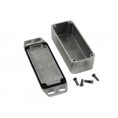

Project template containing the recommended board layout for Hammond Manufacturing 1590D:
Black: 1590WDFLBK - HM3698-ND
Unpainted: 1590WDFL - HM1949-ND
Black: 1590WDFBK - HM1948-ND
Unpainted: 1590WDF - HM3699-ND
Black: 1590WDBK - HM3692-ND
Unpainted: 1590WD - HM591-ND
Black: 1590DFLBK - HM1912-ND
Unpainted: 1590DFL - HM577-ND
Black: 1590DFBK - HM1911-ND
Unpainted: 1590DF - HM3586-ND
Black: 1590DBK - HM1533-ND
Unpainted: 1590D - HM154-ND
|
|
 |
The "Dwgs.User" layer contains all critical dimmensions in milimeters[inches].
The "Edge.Cuts" layer contains the maximum board outline and holes to align with board standoffs.
PCB Preview: